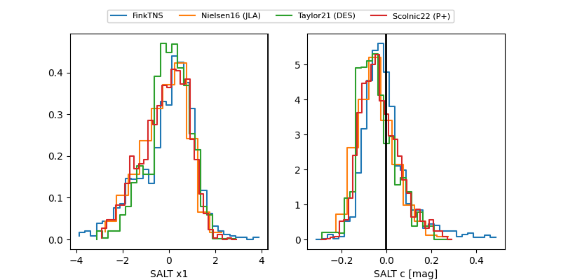

FINK: ZTF25abogvjf
Lasair: ZTF25abogvjf
ALeRCE: ZTF25abogvjf
TNS: 2025wyq
YSE: 2025wyq
ZTF25abogvjf (ztf,fink)
2025wyq (tns,yse)
ATLAS25ljq (atlas)
equatorial (ra, dec) = (29.9864,+35.45818)
galactic (l, b) = (138.3255,-25.35736)

last atlasc=17.80, atlaso=17.92, ztfg=17.91, ztfr=17.78
3 atlasc, 2 atlaso, 7 ztfg, 7 ztfr detections